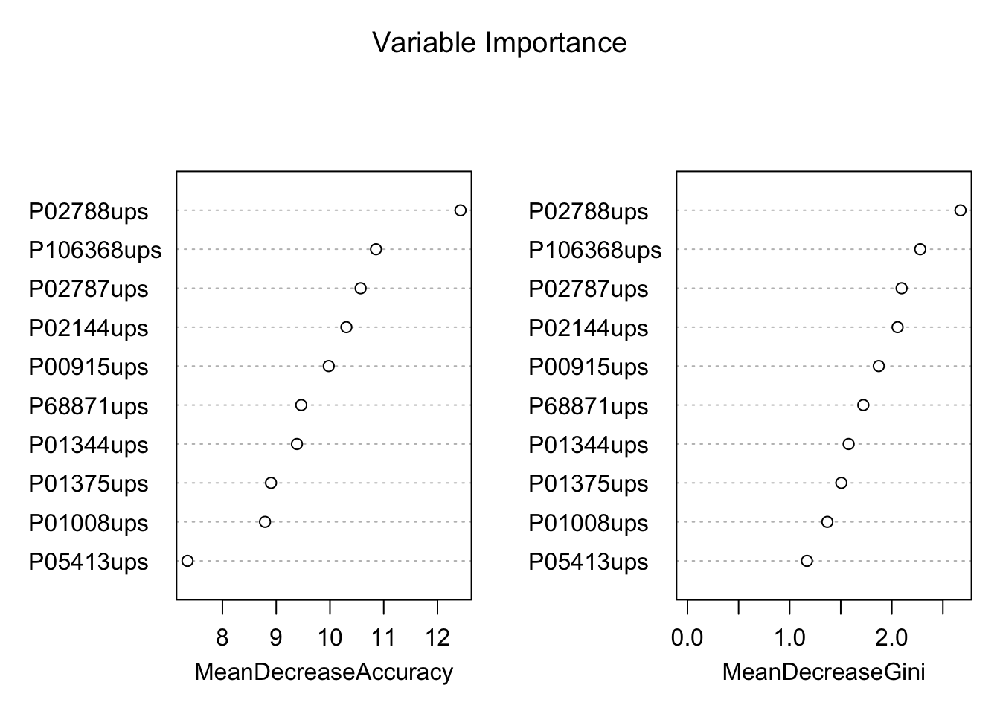

Chapter 6 Day 2 - Section 6 : Multivariate analysis and classification
6.1 Data
- The protein-level data
quant.pd.rdafrom section 5.
6.2 Protein quantification
6.2.1 Read the protein level data from MSstatsTMT
library(tidyr)
library(dplyr)
# load data
load('data/data_ProteomeDiscoverer_TMT/quant.pd.rda')
# Pretend the two replicates within each condition and mixture are biological replicate
quant.pd <- quant.pd %>%
mutate(BioReplicate = paste(Mixture, Channel, sep="_"))6.2.2 Protein quantification
We should first get subject quantification for each protein.
# protein quantification per subject
head(quant.pd)
# use technical replicate 2 and 3 as training data
quant.pd.per.subject <- quant.pd %>% filter(TechRepMixture != "1") %>%
group_by(Protein, BioReplicate) %>%
summarise(Abundance = median(Abundance, na.rm = TRUE)) %>%
spread(BioReplicate, Abundance)
train_abun <- quant.pd.per.subject
colnames(train_abun)# make protein abundance matrix
proteins <- train_abun$Protein
train_abun <- train_abun[, -1]
train_abun <- t(train_abun)
colnames(train_abun) <- proteins
dim(train_abun) # there are 50 rows (each row for subject) and 50 columns (one column per protein)## [1] 50 50# get annotation information
colnames(quant.pd)## [1] "Run" "Protein" "Abundance" "Channel"
## [5] "BioReplicate" "Condition" "TechRepMixture" "Mixture"train_anno <- quant.pd %>% select(BioReplicate, Condition)
train_anno <- unique(train_anno)
train_anno <- as.data.frame(train_anno)
dim(train_anno) # there are 50 rows (each row for subject)## [1] 50 2## remove the normalization channels
train_abun <- train_abun[train_anno$Condition != "Norm",]
train_anno <- train_anno[train_anno$Condition != "Norm",]6.2.3 Deal with missing values
Please check whether there are missing values (NAs) or not. If there is no intensity at all in certain subject for certain protein, we can’t get subject-summarized for that run.
sum(is.na(train_abun))## [1] 29There are three NAs. Then, we need to decide how to deal with NAs. * First option: remove the samples with missing values * Second option: impute the missing values. Such as 1) with minimum value per protein or among all proteins, 2) with median or mean.
# First option: remove the samples with missing values
dim(na.omit(train_abun))## [1] 22 50# Second option: impute the missing values with miminal value
random.imp <- function (a){
missing <- is.na(a)
n.missing <- sum(missing)
a.obs <- a[!missing]
imputed <- a
# imputed[missing] <- 0 # with zero
# imputed[missing] <- median(a.obs) # with median values
imputed[missing] <- min(a.obs) # with minimal values
return (imputed)
}
pMiss <- function(x){
sum(is.na(x))/length(x)*100
}6.2.3.1 Only keep the subjects with less than 5% missing values
subjectmissing <- apply(train_abun, 1, pMiss)
train_abun <- train_abun[subjectmissing <= 5, ]
dim(train_abun)## [1] 37 506.2.3.2 Impute the missing values
In this case, let’s impute the missing values with minimum value per protein.
# make sure the subject order in train_abun and train_anno consistent
train_anno <- train_anno[train_anno$BioReplicate %in% rownames(train_abun),] #remvoe the filtered subjects
train_abun <- train_abun[train_anno$BioReplicate,]
imputed_train_abun <- apply(train_abun, 2, function(x) random.imp(x))
imputed_train_abun <- as.data.frame(imputed_train_abun)
sum(is.na(imputed_train_abun))## [1] 06.3 Principal components analysis (PCA)
6.3.1 PCA with prcomp function
Input has the row for run (subject) and the column for proteins.
?prcomp
# rows are proteins and columns are subjects
pc <- prcomp(imputed_train_abun)
# Inspect PCA object
summary(pc)## Importance of components:
## PC1 PC2 PC3 PC4 PC5 PC6
## Standard deviation 2.6934 0.96718 0.52218 0.44114 0.41603 0.3419
## Proportion of Variance 0.7571 0.09762 0.02846 0.02031 0.01806 0.0122
## Cumulative Proportion 0.7571 0.85473 0.88318 0.90349 0.92155 0.9337
## PC7 PC8 PC9 PC10 PC11 PC12
## Standard deviation 0.31467 0.28257 0.26482 0.22441 0.22257 0.21286
## Proportion of Variance 0.01033 0.00833 0.00732 0.00526 0.00517 0.00473
## Cumulative Proportion 0.94408 0.95242 0.95974 0.96499 0.97016 0.97489
## PC13 PC14 PC15 PC16 PC17 PC18
## Standard deviation 0.1958 0.18588 0.16430 0.14277 0.13591 0.12553
## Proportion of Variance 0.0040 0.00361 0.00282 0.00213 0.00193 0.00164
## Cumulative Proportion 0.9789 0.98250 0.98532 0.98744 0.98937 0.99101
## PC19 PC20 PC21 PC22 PC23 PC24
## Standard deviation 0.12073 0.10874 0.10459 0.09577 0.08881 0.08152
## Proportion of Variance 0.00152 0.00123 0.00114 0.00096 0.00082 0.00069
## Cumulative Proportion 0.99254 0.99377 0.99491 0.99587 0.99669 0.99739
## PC25 PC26 PC27 PC28 PC29 PC30
## Standard deviation 0.07513 0.07431 0.06282 0.05512 0.05117 0.04461
## Proportion of Variance 0.00059 0.00058 0.00041 0.00032 0.00027 0.00021
## Cumulative Proportion 0.99797 0.99855 0.99896 0.99928 0.99955 0.99976
## PC31 PC32 PC33
## Standard deviation 0.04000 0.02629 2.325e-15
## Proportion of Variance 0.00017 0.00007 0.000e+00
## Cumulative Proportion 0.99993 1.00000 1.000e+00names(pc)## [1] "sdev" "rotation" "center" "scale" "x"6.3.2 Check the proportion of explained variance
Let’s check the proportion of explained variance. The first component has the largest variance. In this case, we need 2 components to capture most of the variation.
percent_var <- pc$sdev^2/sum(pc$sdev^2)
barplot(percent_var, xlab="Principle component", ylab="% of variance")cum_var <- cumsum(pc$sdev^2/sum(pc$sdev^2))
barplot(cum_var, xlab="Principle component", ylab="Cumulative % of variance" )6.3.3 Visualization for PC1 vs PC2
Let’s visualize PC1 vs PC2 in scatterplot. ‘x’ include PC components for each subject.
# head(pc$x)
library(ggplot2)
ggplot(aes(x=PC1, y=PC2), data=data.frame(pc$x))+
geom_point(size=4, alpha=0.5)+
theme_bw()In order to distinguish group by colors or shape, add Group informtion to ggplot. The order should be the same as column of input.
head(train_anno)## BioReplicate Condition
## 1 Mixture1_127C 0.125
## 2 Mixture1_129N 0.125
## 3 Mixture1_128N 0.5
## 4 Mixture1_129C 0.5
## 5 Mixture1_127N 0.667
## 6 Mixture1_130C 0.667# Create PC1 vs PC2 scatterplot with Condition colors
ggplot(aes(x=PC1, y=PC2, color=Condition), data=data.frame(pc$x, Condition=train_anno$Condition))+
geom_point(size=4, alpha=0.5)+
theme_bw()6.4 Heatmap
6.4.1 matrix format
ht.data <- t(imputed_train_abun)
# check the class
class(ht.data)## [1] "matrix"6.4.2 heatmap function in base stats package
First, let’s try to draw heatmap with base function.
# Change the font of row and column label
heatmap(ht.data, cexRow = 0.3, cexCol = 0.4)library(marray)## Loading required package: limmamy.colors <- c(maPalette(low = "darkblue", high = "white", k = 7)[-7],
"white",
maPalette(low = "white", high = "darkred", k = 7)[-1])
heatmap(ht.data, cexRow = 0.3, cexCol = 0.4, col = my.colors)# Don't do cluster on rows
heatmap(ht.data, cexRow = 0.3, cexCol = 0.4, col = my.colors, Rowv = NA)
# Don't do cluster on columns
heatmap(ht.data, cexRow = 0.3, cexCol = 0.4, col = my.colors, Colv = NA)6.4.3 Color bar for group information
Add color side bar at th top of columns to distinguish group information by run.
unique(train_anno$Condition)## [1] 0.125 0.5 0.667 1
## Levels: 0.125 0.5 0.667 1 Normgroup.color <- rep("blue", nrow(imputed_train_abun))
group.color[train_anno$Condition == "1"] <- "red"
group.color[train_anno$Condition == "0.667"] <- "yellow"
group.color[train_anno$Condition == "0.5"] <- "orange"
heatmap(ht.data, ColSideColors=group.color, col = my.colors, cexRow = 0.3, cexCol = 0.4, Rowv = NA)6.4.4 Different distance and clustering
Try different distances calculation and clustering methods. Choice of distance metric or clustering matters!
Distance options: euclidean (default), maximum, canberra, binary, minkowski, manhattan
Cluster options: complete (default), single, average, mcquitty, median, centroid, ward
# can change method for distance calculation
col_distance <- dist(t(ht.data), method = "euclidean")
# can change clustering method
col_cluster <- hclust(col_distance, method = "ward.D")
heatmap(ht.data,
cexRow = 0.3, cexCol = 0.4, Rowv = NA,
ColSideColors = group.color,
col = my.colors,
Colv = as.dendrogram(col_cluster)) 6.5 Classification
6.5.1 Training random forest with all the proteins
Random Forest algorithm can be used for both classification and regression applications. In this tutorial, we will only focus random forest using R for binary classification example.
Random Forest algorithm is built in randomForest package of R and same name function allows us to use the Random Forest in R.
# Set random seed to make results reproducible:
set.seed(430)
#install.packages("randomForest")
# Load library
library(randomForest)
?randomForestSome of the commonly used parameters of randomForest functions are
formula: Random Forest Formuladata: Input data framentree: Number of decision trees to be grown. Larger the tree, it will be more computationally expensive to build models.mtry: It refers to how many variables we should select at a node split. Also as mentioned above, the default value is p/3 for regression and sqrt(p) for classification. We should always try to avoid using smaller values of mtry to avoid overfitting.nodesize: nodesize - It refers to how many observations we want in the terminal nodes. This parameter is directly related to tree depth. Higher the number, lower the tree depth. With lower tree depth, the tree might even fail to recognize useful signals from the data. Defaut is 1 for classification.importance: Whether independent variable importance in random forest be assessed
Mainly, there are three parameters in the random forest algorithm which you should look at (for tuning): ntree, mtry and nodesize.
# add group information to the training data
imputed_train_abun$Condition <- droplevels(train_anno$Condition)
# randomForest dosen't allow special symbol in the protein name
colnames(imputed_train_abun) <- gsub("-", "", colnames(imputed_train_abun))
# fit random forest
rf=randomForest(Condition ~ . , data = imputed_train_abun, importance=TRUE)
rf##
## Call:
## randomForest(formula = Condition ~ ., data = imputed_train_abun, importance = TRUE)
## Type of random forest: classification
## Number of trees: 500
## No. of variables tried at each split: 7
##
## OOB estimate of error rate: 0%
## Confusion matrix:
## 0.125 0.5 0.667 1 class.error
## 0.125 8 0 0 0 0
## 0.5 0 8 0 0 0
## 0.667 0 0 9 0 0
## 1 0 0 0 8 0Variable importance plot is also a useful tool and can be plotted using varImpPlot function. Top 10 proteins are selected and plotted based on Model Accuracy and Gini value. We can also get a table with decreasing order of importance based on a measure (1 for model accuracy and 2 node impurity)
# plot importance of protiens
varImpPlot(rf, sort = T,
main="Variable Importance",
n.var=10)
# store the importance of proteins
var.imp <- data.frame(importance(rf,
type=2))
# make row names as columns
var.imp$Variables <- row.names(var.imp)
# order the proteins based on their importance
var.imp <- var.imp[order(var.imp$MeanDecreaseGini,decreasing = T),]
# select top 10 proteins
biomarkers <- rownames(var.imp)[1:10]
biomarkers## [1] "P02788ups" "P106368ups" "P02787ups" "P02144ups" "P00915ups"
## [6] "P68871ups" "P01344ups" "P01375ups" "P01008ups" "P05413ups"6.5.2 Predict validation cohort
valid_abun <- quant.pd %>% filter(TechRepMixture == "1") %>%
select(Protein, BioReplicate, Abundance) %>%
spread(BioReplicate, Abundance)
# make protein abundance matrix
proteins <- valid_abun$Protein
valid_abun <- valid_abun[, -1]
valid_abun <- t(valid_abun)
colnames(valid_abun) <- proteins
dim(valid_abun) # there are 50 rows (each row for subject) and 50 columns (one column per protein)## [1] 50 50# get annotation information
colnames(quant.pd)## [1] "Run" "Protein" "Abundance" "Channel"
## [5] "BioReplicate" "Condition" "TechRepMixture" "Mixture"valid_anno <- quant.pd %>% select(BioReplicate, Condition)
valid_anno <- unique(valid_anno)
valid_anno <- as.data.frame(valid_anno)
dim(valid_anno) # there are 50 rows (each row for subject)## [1] 50 2valid_abun <- valid_abun[valid_anno$BioReplicate,]
## remove the normalization channels
valid_abun <- valid_abun[valid_anno$Condition != "Norm",]
valid_anno <- valid_anno[valid_anno$Condition != "Norm",]
imputed_valid_abun <- apply(valid_abun, 2, function(x) random.imp(x))
imputed_valid_abun <- as.data.frame(imputed_valid_abun)
# randomForest dosen't allow special symbol in the protein name
colnames(imputed_valid_abun) <- gsub("-", "", colnames(imputed_valid_abun))
# prediction on validation set
valid_anno$Condition <- droplevels(valid_anno$Condition)
valid_pred <- predict(rf, imputed_valid_abun)
# Validation set assessment #1: looking at confusion matrix
table(data=valid_pred,
reference=valid_anno$Condition)## reference
## data 0.125 0.5 0.667 1
## 0.125 10 0 0 0
## 0.5 0 10 2 0
## 0.667 0 0 8 0
## 1 0 0 0 10# calculate the predictive accuracy
misClasificError <- mean(valid_pred != valid_anno$Condition)
print(paste('Accuracy',1-misClasificError))## [1] "Accuracy 0.95"The confusion matrix is a good way of looking at how good our classifier is performing when presented with new data.